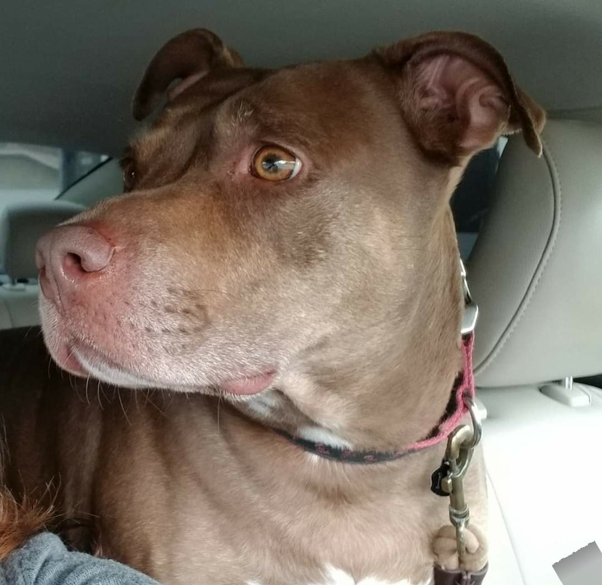

My Pets
Okay, real talk? They are not mine. I can't have pet's right now as I live in an apartment they would be home alone locked inside for eleven hours a day. So, these are my parent's dogs that
I visit as often as I can. The pit-bull is a total sweetheart, her name is MJ, she was my late brothers dog and my parent's took her in. Honestly, I haven't met a mean pit-bull.
My parents also have two german shepards that we call, "The Twins" but are super sweet. Honestly, taking them for walks and car rides is the best. They are all well behaved.
